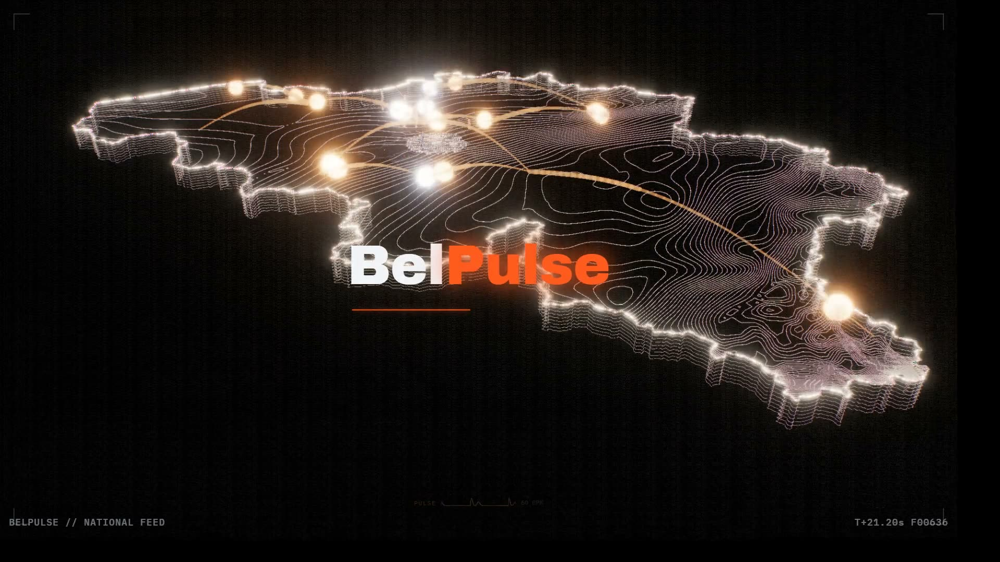

Background: an animated film of Belgium's map and its 565 communes, decorative only, with no figures of its own.Belgium's economic data, updated automatically.
Every figure on this site is fetched from an official source, re-keyed to one canonical model, and published with the date it was retrieved and how it was made. No estimate is presented as a measurement.
—
Public finances
Commune profiles
Compare every Belgian commune and explore its economic and social indicators.
Belgium in maps
Explore regional dynamics through interactive maps built on official data.
Key indicators for the Belgian economy
National series, each with the period it describes.
Updated automatically
A scheduled job fetches every source and rebuilds the site. No figure is typed in by hand.
Official sources
Statbel, the NBB, ONEM/RVA, the federal police and Eurostat — each credited under its own licence.
Traceable and transparent
Every figure states its source, the period it covers, when it was retrieved and whether it was measured or computed.
For citizens and decision-makers
Open data, open code, no account required, and every underlying file downloadable.
Explore your commune's data
Every commune this pipeline covers, with its own indicators and its own map.